Mohammad Samiul
Hasan
Prospective PhD Applicant
New Jersey, USA
Skills & Expertise
Machine Learning


Goal: To build a neural network from scratch to recognize handwritten digits from the MNIST dataset without using any high-level machine learning libraries.
Method: Implemented all key components of the neural network architecture from the ground up using NumPy for matrix operations. This included manual coding of activation functions (ReLU, Softmax), forward and backward propagation algorithms, and the gradient descent optimizer. Matplotlib was used for visualizing the training and validation loss.
Outcome: The model achieved a training accuracy of 98.5% and a test accuracy of 84.3%. This project demonstrates a strong foundational understanding of deep learning concepts, including network architecture, training loops, and optimization algorithms, beyond relying on pre-built frameworks.
Molecular Dynamics Simulation & Analysis
 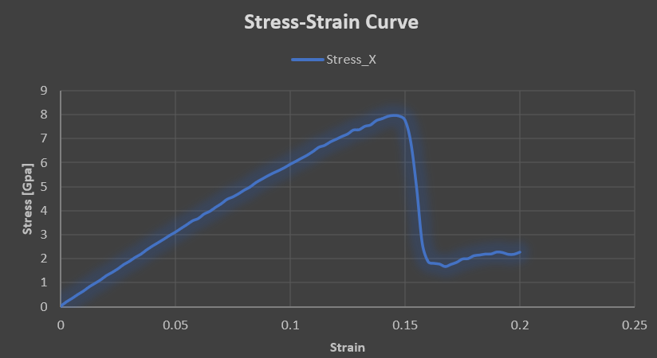
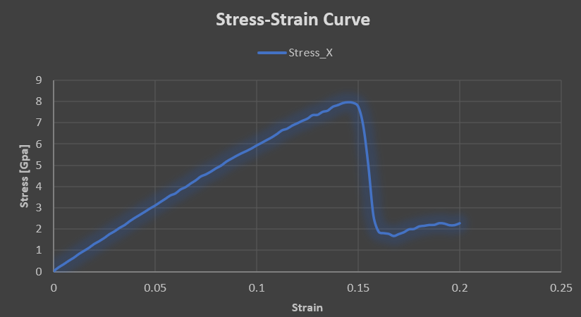

Tools Used: Atomsk, LAMMPS, OVITO
Goal: To simulate the tensile deformation of a single-crystal aluminum nanopillar to calculate its Young's modulus and observe its mechanical behavior at the atomic scale.
Method: A custom aluminum nanopillar model was generated using Atomsk. The model was then subjected to a tensile simulation in LAMMPS, where stress-strain data was collected. The post-processing and visualization of the deformation, including the identification of dislocations and defects, were performed using OVITO.
Outcome: The simulation yielded a Young's modulus of 61.5 GPa, which is in close agreement with established literature values for aluminum. This project demonstrates a comprehensive skill set in preparing, executing, and analyzing complex MD simulations to extract critical material properties.
Programming & Scripting


Autonomous Vehicle Path Tracking
Goal: Developed a Pure Pursuit Controller to enable an autonomous vehicle to accurately follow a predefined path in a simulated environment.
Method: This project uses Python and the Pygame library to simulate a vehicle's motion based on the kinematic bicycle model. The core of the implementation is the Pure Pursuit algorithm, which dynamically calculates the required steering angle to guide the vehicle towards a "lookahead" point on the desired path. The code utilizes NumPy for efficient vector and matrix calculations to manage the vehicle's state and a simple controller loop to continuously update the vehicle's position and orientation.
Outcome: The simulation demonstrates a foundational understanding of robotics and control theory. It effectively showcases a practical application of algorithmic logic and complex mathematical concepts in a visual, real-time environment. This project highlights proficiency in Python for scientific computing and simulation development.
Competitive Programming & Problem Solving
I have solved over 100 problems on platforms like Codeforces and LeetCode, demonstrating strong algorithmic and problem-solving skills.
Key Skills:
- C++ STL: Proficient in using the Standard Template Library for efficient data manipulation.
- Data Structures:
- Time & Space Complexity
- Singly/Doubly Linked Lists, Stacks, Queues, Priority Queues
- Binary Trees, BST, Heaps
- Algorithms:
- Graph Algorithms (BFS, DFS)
- Shortest Path Algorithms (Dijkstra, Bellman-Ford, Floyd-Warshall)
- Dynamic Programming (e.g., 0-1 Knapsack)
- Disjoint Set Union

Project Title: Solving a Nonlinear System Using Newton-Raphson Method in MATLAB
Goal: To find the solution of a system of two nonlinear equations in two variables by applying the Newton-Raphson iterative method.
Method: The project involved defining two nonlinear equations and their Jacobian matrix. I implemented one iteration of the Newton-Raphson update formula, and then calculated the relative error between successive iterations to track convergence. The core functions such as matrix inversion and other vector operations were used to perform the calculations.
Outcome: The program successfully performed one Newton-Raphson iteration starting from an initial guess. It outputted the updated estimate of the solution vector and the percentage error, demonstrating how MATLAB can be used to implement numerical root-finding techniques for nonlinear systems efficiently.

 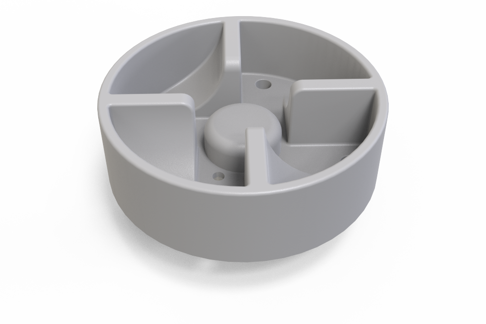
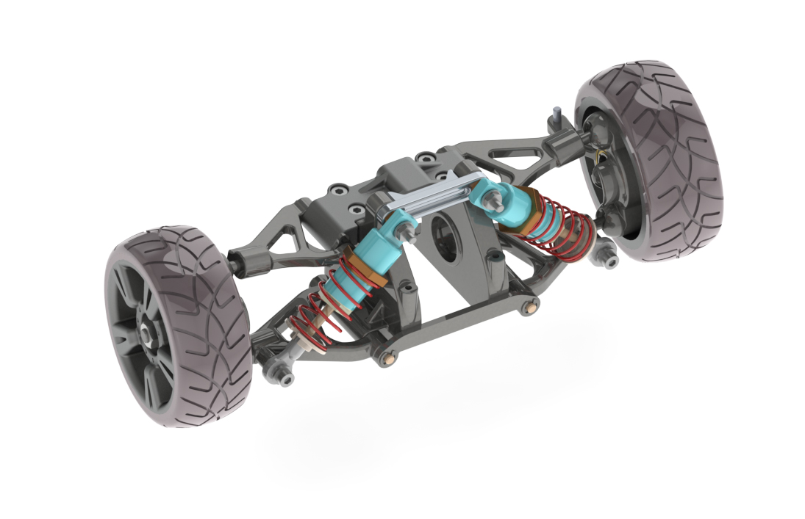
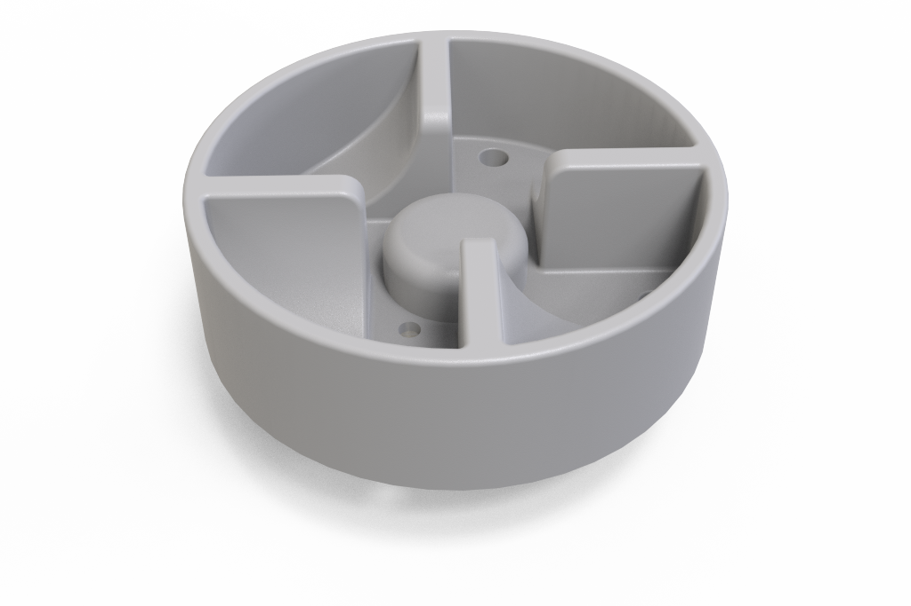
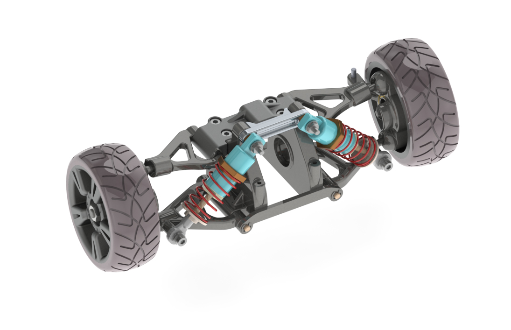


 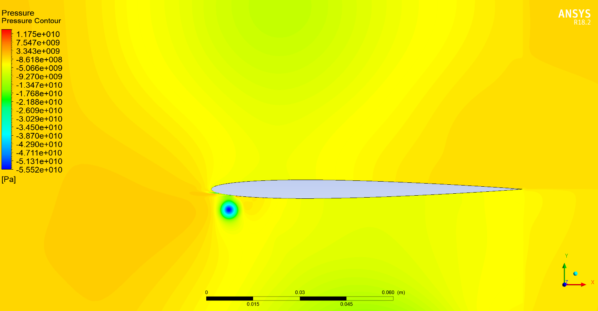
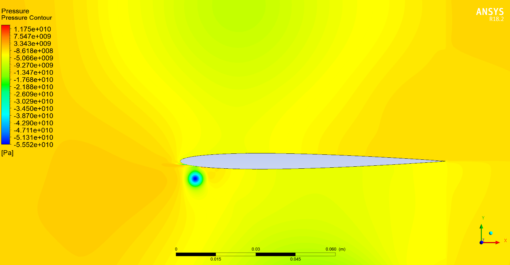
 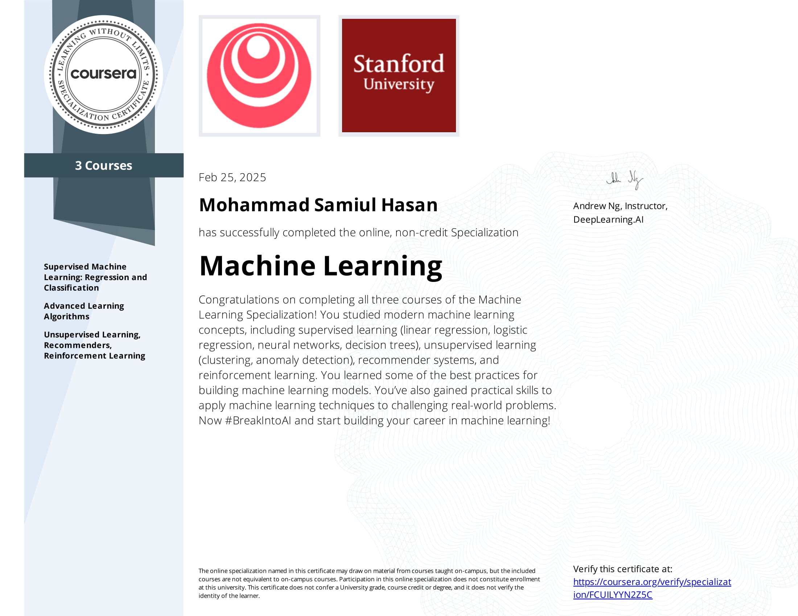
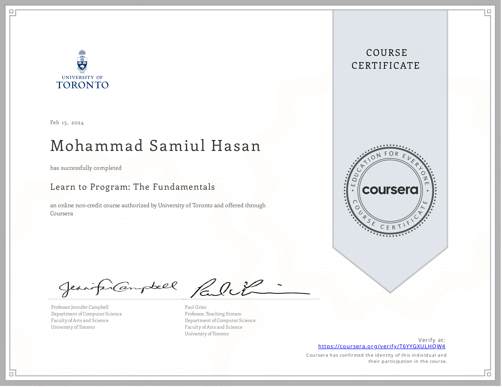
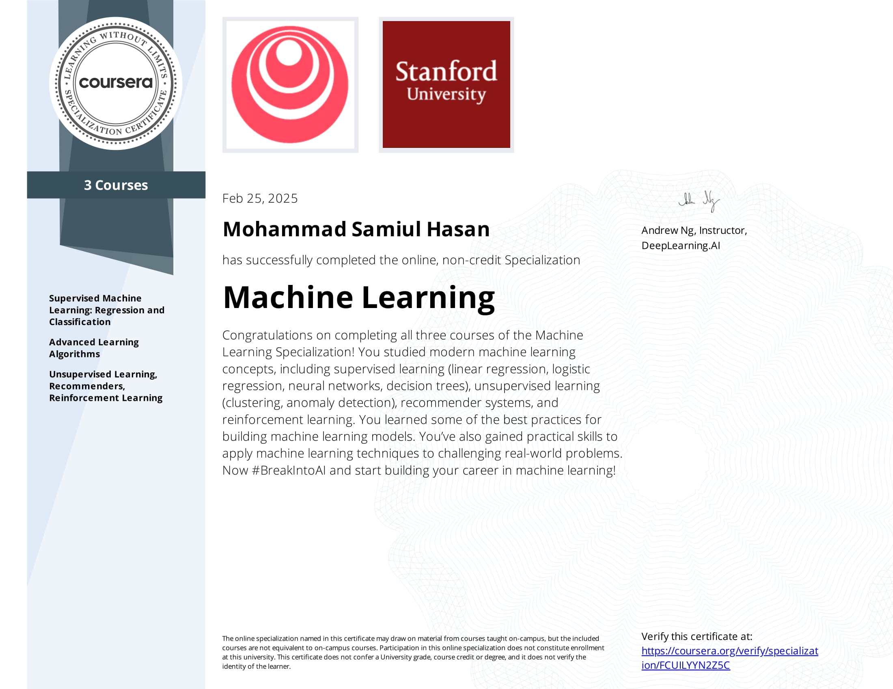
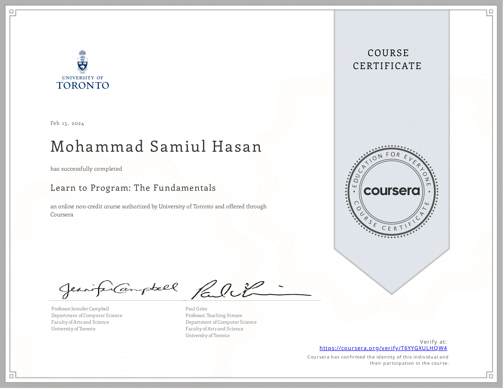